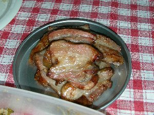

スモークパーティー | 2005年6月 |
|---|---|
| スモーク いわゆる煙。スモークパーティー 日本語で煙祭り？！ さて、単なるバーベＱでも、何か工夫をしたい「しふとべる」としては、スモークパーティーを企画した。上記通り煙祭りではない。当然、スモーククッキングである。もしかして、タバコ愛好家の集いとでも思ったかな。 バーベＱやキャンプ等で、毎回キッカー製作のスモークチーズが人気！ と言うのは、「しふとべる」イベント参加者なら誰でも知っていることでしょう。今回はその拡大版！ 全般スモーククッキング！ って事で雨が降る中に、安部川の橋の下に陣取るメンバーたち。ここの所、段ボール箱を代用していたスモーク箱も、今回は久々にキッカー製作、スモーク缶Ⅲ号の出番である。 今回はメンバーの友人等が集まり多所帯！ 車で風除けを作り、タープを張り、テーブルを出し、ダッチオーブンも登場！ なかなか賑やかになりました♪ さて、中身のほうは。キッカーご自慢のスモークチーズをはじめ、今回は卵やベーコンなどもチャレンジ。もう〜美味しい (*^^)v ベーコンを入れたスープをダッチオーブンで作り、これまた美味しい〜〜〜 | |
 スモーク缶三号 |  橋の下で・・・ |
| 昼から始めた料理も、夕方近く、これから本番って時に河川敷のゲート（と言ってもチェーン一本だけど）が6時にしまってしまうらしい事が判明！！ おいおい、まだ火点いてるよ。 違法行為も嫌なので、とりあえず皆で撤収作業を開始。雨のため車の台数が多いのが幸い下。なんでもかんでも車に一時積み込み。そのまま近くの休憩所付の公園へ。そして二次会♪ この二次会も、狭いところだし、ちょこっとね。なんて気分だったのが、気がつけば11時。周りに人家があまりない場所だけど、さすがに迷惑と思い（当たり前だが）ここで終了〜 しかし、楽しかった。通常と違うバーベＱと言う点では、最高に違っていた（笑） 今度は、もうちょっと場所を選定して、のんびりやりたいね。って事で次回乞うご期待！ | |
 煙でみえましぇ〜ん |  チャーシュー？で良いのかな？ |
| 写真＆コメント by べっしー | |